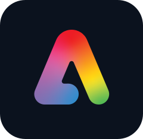
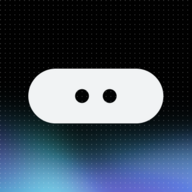
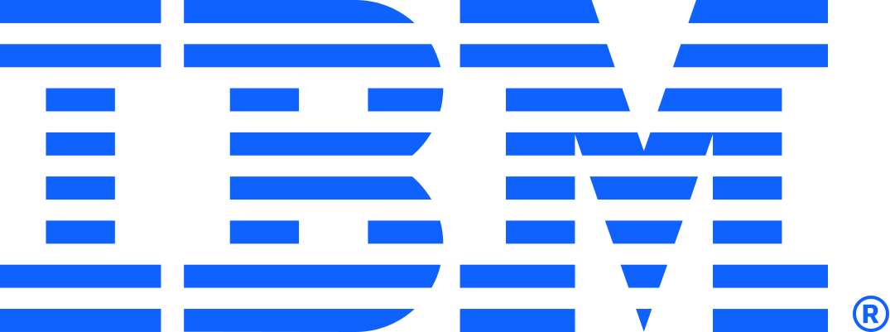
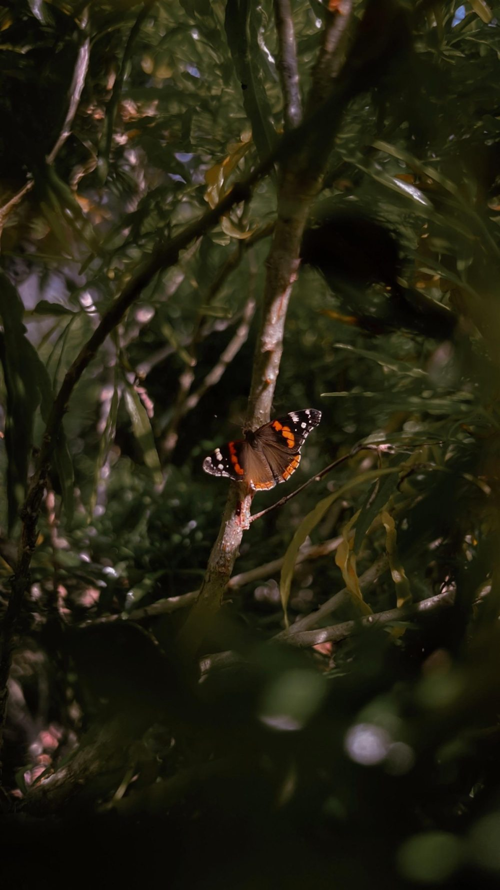
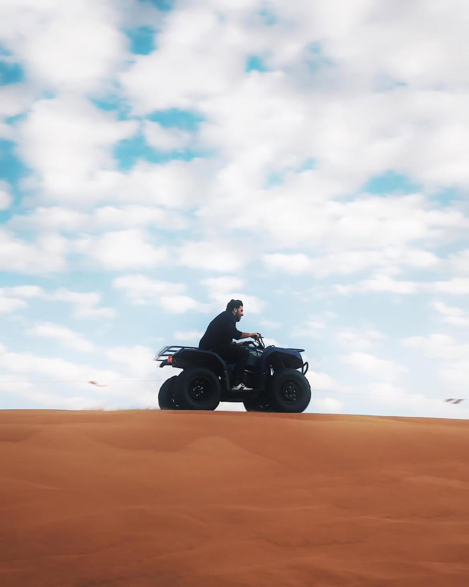
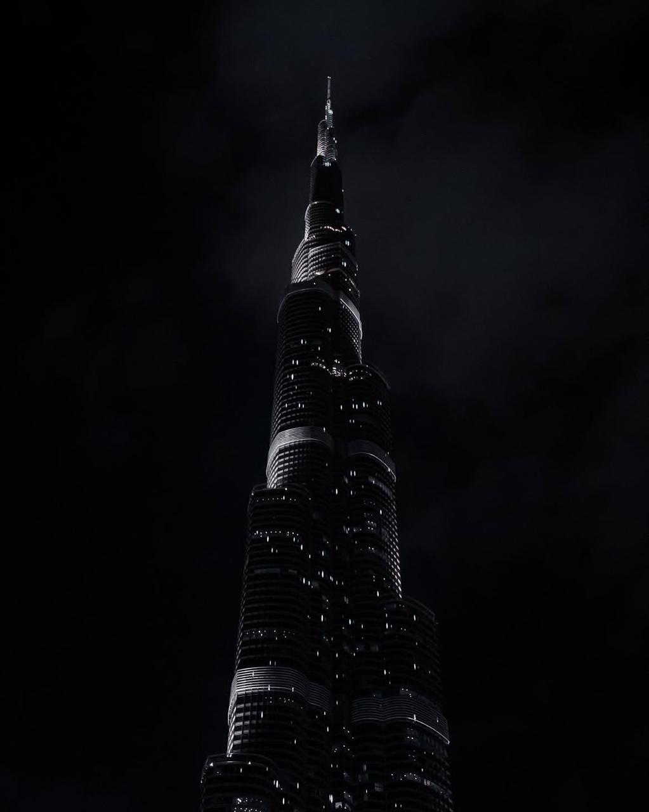
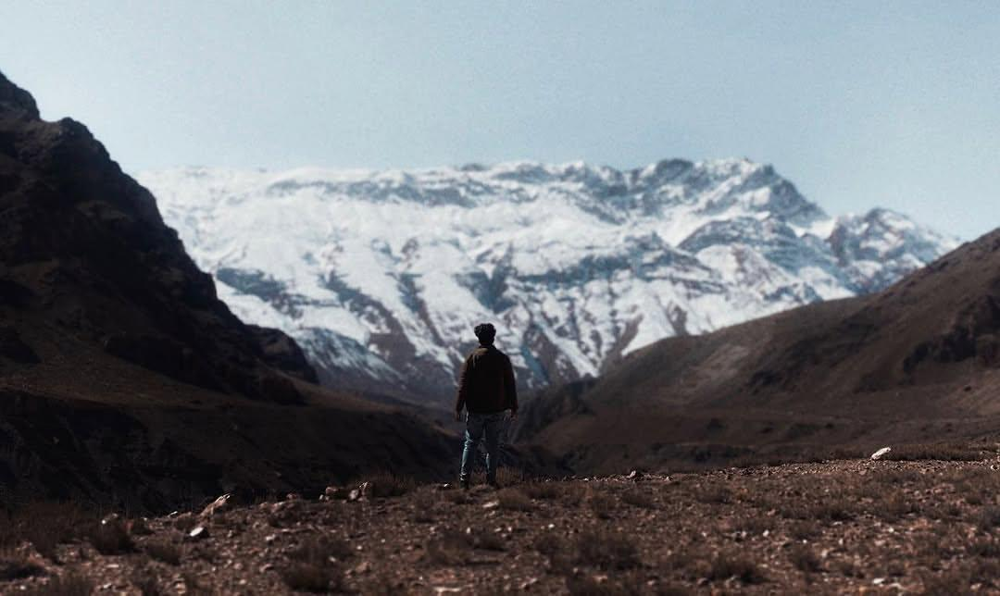

Designer with a computer science degree and three years in enterprise IT. I design dashboards, maps and workflows for complex products, and prototype them in working code with AI tools so people can click through an idea before it is built.
HeatmapsDrilldownsDesign tokensAccess-based viewsEmpty statesHeatmapsDrilldownsDesign tokensAccess-based viewsEmpty states
5+years designing, as a hobby and freelance, because I love it
1year of professional design work
3+years in enterprise IT and ERP
GRC & ERPdomain specialised
(01) About
I started on the other side of the screen, supporting warehouse systems at Infosys and running IT and ERP in Dubai. Seeing every day which screens slowed people down is what pulled me into design.
At Jethur, an AI-enabled governance, risk and compliance platform, I design the dashboards and workflows that compliance teams use to understand risk at a glance.
Before that, at Al Moosawi Trading in Dubai, I was the first on-site IT and ERP person. At Infosys I supported a US retail client's warehouse systems and automated their SQL reports.
Design has been with me the whole way. For more than five years I've designed as a hobby and as a freelancer in my free time, simply because I love it.
I like dense, serious data. My job is to make it calm. I usually prototype in HTML with AI tools, so clients and developers can test a real screen instead of a static picture.
Now
UI/UX Designer, Jethur GRC
Based in
Kerala, India. Open to the UAE and GCC
Focus
Enterprise SaaS, dashboards, design systems
Education
BE Computer Science, Sahyadri College of Engineering
Certified
Google UX Design Foundations · IBM Enterprise Design Thinking Practitioner · Figma UI/UX Design Essentials (Udemy)
Languages
English, Hindi, Malayalam
(02) Selected work
Casestudies
(03)
01GRC · Data viz · Maps
Base Watch: one map for 13 bases
A risk dashboard built around an interactive map. Each base shows its risk at a glance, and a click opens its heatmap, corrective actions and compliance progress.
Contributed to the design of Jethur, an AI-enabled GRC platform, and played an important role in designing Jethur V2, including the Access Governance and Compliance modules and the AI Configuration settings.
Designed data-heavy GRC dashboards, including a 25-KPI Risk Management dashboard, Segregation of Duties, Access Governance and ISO 27001 assessment, using heatmaps, gauges, drilldowns and pivotable tables.
Worked with cross-functional teams from BRDs and process specs, and flagged BRD gaps inside prototypes so open questions were visible before build.
Delivered rapid prototypes of GRC screens and workflows for client review, using AI tools, and turned client change requests around within the same day.
Created brand and collateral designs for clients, including cover pages, login pages, report covers, newsletter covers and widgets.
First on-site IT and ERP administrator for a multi-location industrial supplier.
Handled user access, system configuration and deployments, and wrote the ERP handover SOP.
Designed company profiles, service documents and internal materials in Figma and Canva.
Supported Torrid, a US retail client, at its distribution center.
Built automated SQL reports that cut report generation time by 85% and manual effort by 40%.
Kept uptime above 97% and cut SLA resolution time by 30%.
Landing pages, websites and app concepts for small businesses, including ArcConsulting and an industrial supplier.
(05) Skills & expertise
What Ibring
AI & Product Design
01
AI-assisted design
AI UX workflows
Prompt engineering
AI-driven prototyping
AI evidence analysis UX
Rapid concepts
UX writing
Enterprise SaaS UX
Figma AI
Figma MCP
UX & UI Design
02
User research
Personas
Journey mapping
Information architecture
Wireframing
Prototyping
Usability testing
Heuristic evaluation
Design thinking
Human-centered design
Design systems
Responsive design
Dashboards & data visualization
GRC & Product Domain
03
Compliance management
Evidence management
Audit workflows
Access governance
Risk management
Business continuity
Incident management
ERP systems
Collaboration
04
Stakeholder management
Client discussions
Cross-functional work
Agile UX
Lean UX
Documentation
Problem-solving
Critical thinking
Tools I work with
Figma
Canva

Adobe Express
Claude Design

Stitch with Google
HTML
CSS
Git
GitHub
Jira
Confluence
(06) Certifications
Alwayslearning
Foundations of User Experience (UX) Design
Google

Enterprise Design Thinking Practitioner
IBM
Figma UI/UX Design Essentials
Udemy
(07) Process
How a screengets made
01
Read the requirement
I start from the BRD and the people who will use the screen, and list what they need to decide.
02
Prototype in code
I build a working HTML version with AI tools, with realistic data, so problems show up early.
03
Review with the client
Gaps go inside the prototype as notes. Feedback becomes changes, often on the same day.
04
Systemise it
What works becomes a component, a token or a pattern, so the next screen is faster and consistent.
(08) Photography
Beyond thescreen

Quiet moment in the green

Desert dunes

Burj Khalifa at night

Snow-capped peaksColumns and clouds
(09) Contact
Let's makesomething clear.
I'm open to UI/UX and product design roles in the UAE, the GCC and India, onsite, hybrid or remote. Available to join immediately.
Case study 01 · Concept based on a real client request
Base Watch: one map for 13 bases
A client asked for a way to see risk across 13 bases. I designed this portfolio concept around that real request: it turns 13 separate dashboards into one map that answers "where should I look first?" and then lets you drill in.
Role
UI/UX Designer
Type
Concept, based on a real request
Deliverable
Figma prototype
Tools
Figma
View on Dribbble The map is the front door. Each pin is a base, coloured by its current risk level.
The problem
The client's risk information lived in 13 base-level dashboards. Each one was useful on its own, but there was no single view that showed all 13 side by side.
The idea
Bases are places, so I proposed a map. The map was my idea, and it changed the question the dashboard answers: from "what does this base look like?" to "which base needs me today?"
Start with where, then show what.
Map of 13 bases→Pick a base→Risk heatmap→Corrective actions→Treatment plan progress
Key decisions
Colour carries the risk level
Each base is coded by risk, so the riskiest locations stand out before you read a single number.
Drill down, don't navigate away
Clicking a base opens its heatmap, corrective actions, compliance and treatment plans in context.
Views follow access level
What a user sees depends on their role, so each person gets the bases and detail that are theirs.
A prototype, not a picture
I built it as a clickable Figma prototype, so reviewers can click through the real flow instead of looking at static screens.
The feedback that changed it
The client didn't like the first map style. Instead of guessing a replacement, I added a map style switcher with three options: 3D, hex and outline. Each user can pick the view that reads best for them, and the client got a choice instead of my opinion.
What I learned
The right container matters more than the right chart. Putting risk on a map made the comparison instant.
A clickable prototype gets better feedback than a static mockup, because people react to how it behaves.
When feedback is about taste, giving users a choice can resolve it faster than another round of revisions.
Next case study
Case study 02 · Design concept
Making dense risk metrics readable
A design concept for metric-heavy risk and audit dashboards. The goal: put the most important signal first, and keep every detail one or two clicks away.
Role
UI/UX Designer
Type
Design concept
Focus
Metrics, risk, audit
Tools
Figma, AI tools
View on Dribbble Audit view: totals first, then findings by severity, then the trend over time.
The problem
Risk dashboards tend to grow into a wall of numbers. Shown all at once, dozens of KPIs compete for attention. A risk or compliance lead really needs three answers: is the register healthy, where is exposure high, and which records need action?
Structure before charts
I organised the concept as a four-level hierarchy, so it reads from summary to detail:
Each level answers one question, then hands you to the next.
Choosing the right chart for each question
Heatmaps for exposure
Likelihood against impact shows where risk clusters, faster than any table.
Gauges and bullet charts for targets
When the question is "are we on target?", the chart shows the target.
Bubble and lollipop charts for comparison
They compare categories without the heaviness of many bars.
A pivotable KPI table for detail
Analysts can regroup the breakdown themselves, and every chart drills down into it.
Designing with real-shaped data
Empty mockups hide problems. I filled the concept with a realistic test dataset, with long names, uneven categories and edge cases, so the layout is tested against messy data rather than perfect placeholders. Every widget also has an empty state, so a first-time user's view still makes sense.
One system across views
The same components, cards and colour rules run through the risk, audit and compliance views. Design tokens keep colour and spacing consistent, AI-generated content gets its own dedicated colour, and accessibility basics are built in: strong contrast, readable type and text labels alongside colour.
What this concept shows
How to turn a long list of metrics into a page that reads top to bottom.
How chart choice follows the question, not the other way round.
How a small, consistent system scales across several dashboard views.
Next case study
Case study 03 · Dashboard redesign
Policy management, made clear
Companies have dozens of policies, each with an owner, a lifecycle and people who must read and accept it. This redesign makes it easy to see what is current, what is overdue, and who hasn't acknowledged yet.
Role
UI/UX Designer
Type
Dashboard redesign
Focus
Components, UI copy
Tools
Figma
View on Dribbble Status, lifecycle, distribution by type and acknowledgement rates on one screen.
The problem
Policy data is mostly lists and dates. The questions people ask are simple: which policies are active, which are due for review, and who still needs to acknowledge them? The old screen made people hunt for those answers.
What I designed
Status first. Counts for each policy status sit at the top, so the overall state is clear in one look.
Lifecycle view. Policies are grouped by where they are, from draft to review to published.
Distribution by type shows where most policies sit and where coverage may be thin.
Acknowledgement rates make follow-up easy to spot.
A policy table holds the detail, with consistent component patterns.
Good UI copy is part of the design, not a final pass.
Words and components
I refined the UI copy across the dashboard so labels say what people recognise, and tightened the component patterns so cards, tables and badges behave the same way everywhere. I designed it as interactive, dark-themed mockups so the team could review the flow, not just the layout.